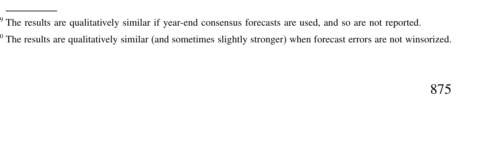
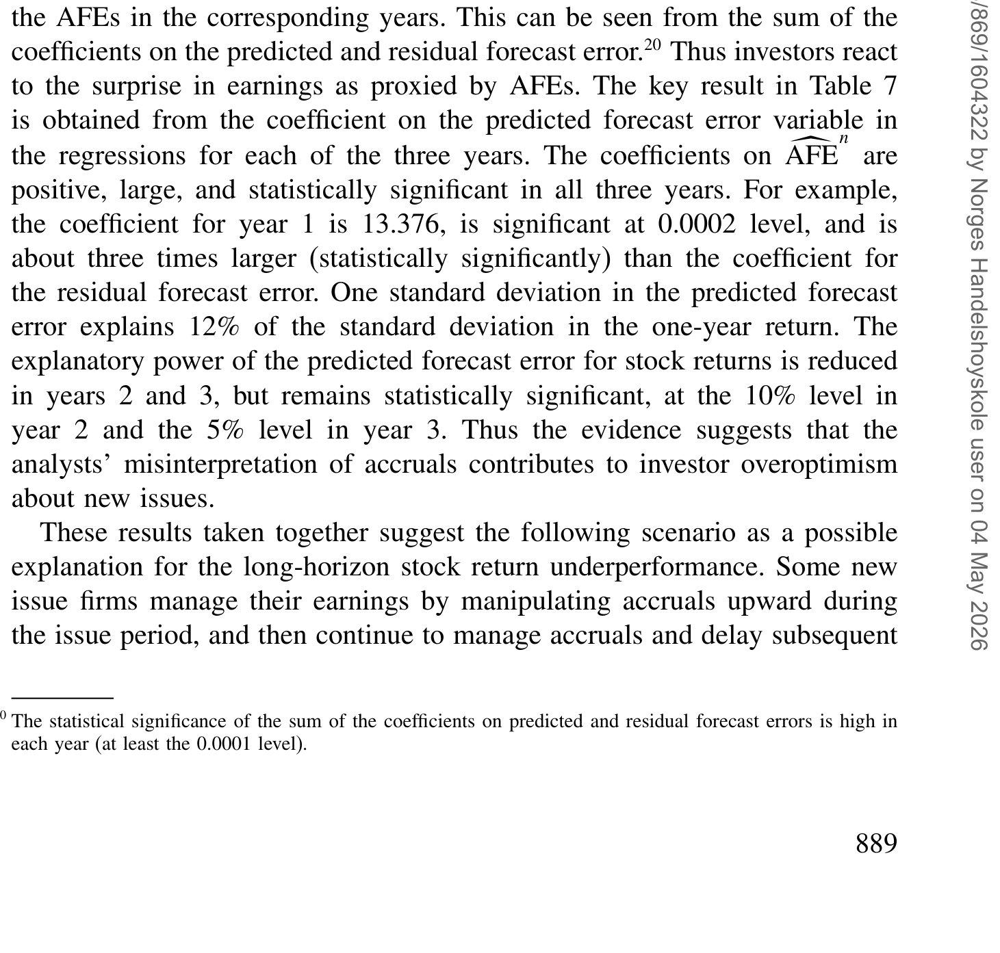
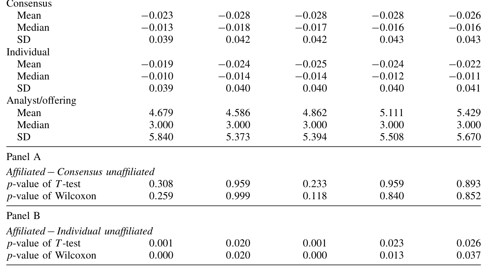
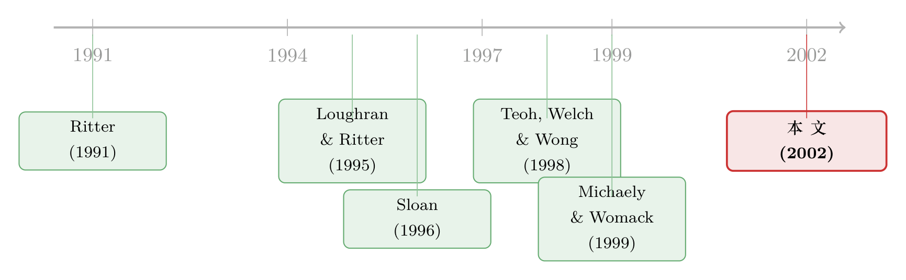

分析师太好骗：新股长期跑输背后，藏着一笔被'轻信'的账
本文读的是 Teoh & Wong (2002, Review of Financial Studies)：新股发行人在发行当年把会计应计(accruals)做高，而分析师没有为这部分"水分"打足折扣，于是连续四年系统性地高估了它们的盈利；用应计"预测"出来的分析师预测误差，恰恰能解释新股的长期低迷。更妙的是，这套"轻信"在非发行公司里同样成立——它把矛头指向了分析师，而不是某个算错了的风险基准。
1 一桩悬了十年的悬案
先把那桩著名的悬案摆出来。
Ritter (1991)、Loughran 和 Ritter (1995)、Spiess 和 Affleck-Graves (1995) 这几篇论文先后发现了一件让人不安的事：公司在做完首次公开发行 (initial public offering, IPO) 或增发 (seasoned equity offering, SEO) 之后的三到五年里，它的股票相对各种基准，每年要跑输 6%–7%。这就是所谓的「新股之谜」(new issues puzzle)。
这个数字大到让人无法假装看不见。于是争论来了，而且一争就是十年。
争的是什么呢？是金融学里那个最古老、也最难缠的问题：收益的可预测性，到底是定价错误，还是风险补偿？ 一方（比如 Fama, 1998）说，市场是有效的，你看到的所谓"低迷"，不过是你的预期收益基准 (benchmark) 设错了——你少算了某种风险，自然就误把风险补偿当成了"异象"。另一方（Shleifer, 2000；Hirshleifer, 2001）说，不，这就是非理性的错误定价。
问题在于，这两种说法在数据上几乎是观测等价的。你看到一组股票收益异常，我永远可以说"那是因为你的风险模型不对"。这就是著名的「联合假设难题」(joint hypothesis problem)：检验市场有效性，永远是在检验"有效性 × 某个资产定价模型"这个乘积，你没法把两者拆开。（关于这种"benchmark 之争"如何让一个个异象悬而未决，可参见《三个异象，为什么命运不同？》。）
那这篇论文怎么办？它做了一件很聪明的事——它干脆不去争那个 benchmark。
2 一条绕开"风险基准"的小路
Teoh 和 Wong 的思路是这样的：与其在"该用什么风险模型"上和对手缠斗，不如换一个不依赖于收益基准的观测对象。
这个观测对象，就是财务分析师 (financial analysts) 的盈利预测误差。
逻辑链条非常干净。分析师是替投资者解读财报、并发布盈利预测的专家。那么——
- 如果分析师有效地使用了信息，那么他们的预测误差就不应该能被任何"过去已经公开"的会计信息系统性地预测。这是有效市场的题中之义。
- 反过来，如果你发现"用一个公开变量就能提前算出分析师将来会错、而且往哪个方向错"，那分析师就是在系统性地误用信息。
注意这条路的妙处：分析师预测误差衡量的是盈利（实际 EPS 减去预测 EPS），不是收益。它不需要任何资产定价模型，也就绕开了那个甩不掉的联合假设。你不必先承认 CAPM 或 Fama-French 是"对的"，就能判断分析师有没有犯系统性错误。
接着，一个自然的问题是：用什么公开变量去"预测"分析师的错误？ 论文给出的答案，是会计应计。
3 应计：财报里那笔"非现金"的账
要理解这篇论文，得先理解应计 (accruals) 到底是什么。
公司财报上报告的盈利，并不等于它实际收到的现金。会计准则允许公司对现金流做一系列调整——赊销算进收入、坏账要计提、存货和固定资产要折旧和减值——这些"对经营现金流的会计调整"，加总起来就是应计。用最朴素的定义写出来：
$$ TAC = \text{NI} - \text{CFO} $$
也就是总应计 (total accruals, TAC) 等于净利润（Compustat 第 172 项）减去经营活动现金流（第 308 项），再用期初总资产做缩放。
应计本身不是坏东西——它的本意是让报告盈利更准确地反映公司的经济实质（现金的时点和经济活动的时点常常对不上）。但问题在于，准则给了管理层裁量权：用加速折旧还是直线折旧、资产折几年、什么时候计提减值。于是应计就成了一把双刃剑：它既可能包含关于未来盈利的真实信息，也可能是管理层用来粉饰报表、操纵投资者认知的工具。
这就引出了论文的核心假设，我把它叫做「分析师的轻信」(analysts' credulity)：
分析师系统性地低估了盈余管理的程度，因此当应计很高时，他们太容易相信"这是好消息"，从而把未来盈利预测得过于乐观。
为了把"信息"和"水分"分开，论文把总应计拆成两块。它用一个横截面版本的修正 Jones 模型 (modified Jones model)：在每个发行年度，拿同行业（两位 SIC）所有非发行公司，把总应计对销售收入变化和厂房设备 (PP&E) 做回归，得到拟合值，就是「预期应计」(expected accruals, ETAC)；剩下的残差，就是「超额应计」(excess accruals, XTAC)：
$$ XTAC = TAC - ETAC $$
直觉很简单：预期应计反映的是行业里随生意自然产生的那部分调整（非裁量的）；超额应计则更可能藏着裁量性的、用来操纵认知的调整。论文的可证伪点就在这里——如果分析师真的被"水分"骗了，那么有预测力的应该是超额应计 XTAC，而不是预期应计 ETAC。
4 数据
样本来自三个数据库的交集：IBES（分析师年度 EPS 预测）、COMPUSTAT（会计数据）、Securities Data Company（1975–1990 年的 IPO 和 SEO 名单），股价来自 CRSP。剔除了银行和公用事业（披露与会计规则差异太大）。
最终新股样本是 1395 个 IPO 和 1260 个 SEO；用来做"普遍性"对照的非发行公司样本有 18,648 个观测。新股集中在高科技行业（SIC 35、36、73），约占 IPO 的 30.5%、SEO 的 27.8%，时间上则在 1983、1985、1986、1987 这几个"热发行年"里扎堆。
预测误差 (AFE) 的定义遵循文献传统——实际 EPS 减去预测，再用预测当月初的股价缩放：
$$ AFE^n = \frac{EPS^{actual}_n - EPS^{forecast}_n}{P} $$
这里上标 \(n=1,\dots,5\) 表示"应计所在的财年"和"被预测的财年"之间的年份滞后。负的 AFE 意味着分析师乐观（实际还没达到预测），正的则意味着悲观。论文用的是发行后每年年中的中位数共识预测，并刻意保证预测日距应计财年末至少有六个月的滞后——这样能确保分析师在做预测时，已经能看到那笔滞后的应计数据。
5 主要结果：分析师确实被"骗"了，而且骗了好几年
先看第一个事实：分析师对新股是一贯乐观的。
如表 2 所示，IPO 和 SEO 在发行后五年的 AFE 均值和中位数清一色为负。IPO 第一年的平均 AFE 是 −0.026，意思是发行一年后的实际 EPS，比分析师的预测低了"每投资一美元 2.6 美分"。这听起来好像不多？换算一下：若平均市盈率是 20，这对应着每股约 52 美分的预测误差。而且这种乐观一年比一年顽固（IPO 五年依次为 −0.026, −0.030, −0.029, −0.032, −0.029），IPO 的负值比 SEO 更深，说明对 IPO 的乐观更甚。

Table 2: reports the summary statistics for the median consensus AFEs
但"一贯乐观"还不够——分析师对所有股票可能都偏乐观，那是水平问题，不是我们要的"可预测性"。真正关键的一步在于：这种乐观的程度，能不能被发行当年的应计提前算出来？
答案是能。论文发现，发行当年的应计越高，随后四年实际盈利低于分析师预测的幅度就越大（即 AFE 越负）。换句话说，应计高的公司，分析师对它们错得更离谱、也更乐观。而且——这正是那个可证伪点——这种预测力只在超额应计 XTAC 上稳健显著，在预期应计 ETAC 上则不显著。这说明分析师栽的跟头，恰恰栽在那部分最可能是"做"出来的裁量性应计上。这个结论对一大堆控制变量和多种替代的预期应计模型都很稳健。
于是反转出现了——也是全文的落点：投资者有没有看穿分析师的这种偏差？
论文用一个回归（论文中的 Equation (5)）把发行后的股票收益，对"由应计预测出来的那部分预测误差"做回归。如表 7 所示，这个预测出来的预测误差，与新股发行后的收益低迷显著相关。这意味着，投资者并没有为分析师的偏差打足折扣——他们天真地相信了过于乐观的预测，于是高估了新股，等到盈利达不到预期时再向下重估，长期低迷就这么出来了。

Table 7: presents the results of Equation (5). The postissue stock return
到这里，那条完整的因果故事就串起来了：
公司在发行时把应计做高 → 分析师没有充分折价、预测过于乐观 → 投资者轻信分析师、高估新股 → 盈利不及预期、向下重估 → 长期跑输。
这恰好为「新股之谜」提供了一个不依赖风险基准的、属于错误定价阵营的独立证据。它也与 Loughran 和 Ritter (1997) 强调的「择时假说」(timing hypothesis) 互补：择时说的是"公司专挑被高估时发行"，而本文说的是"公司主动操纵了认知"。两者都可能在起作用。
6 关联分析师：是更懂，还是更会捧场？
这里还有一个漂亮的"顺手"检验。
承销商 (underwriter) 旗下的分析师，常被怀疑屁股决定脑袋——Michaely 和 Womack (1999) 就发现承销商分析师的推荐有显著偏差，而投资者认不全这种偏差。那么一个自然的疑问是：关联分析师 (affiliated analysts) 是因为更了解公司而预测得更准，还是因为利益冲突而捧得更狠？
论文用个体（而非共识）预测，把分析师分成"承销商关联"和"非关联"两组来比。如表 8 所示，结论有点出人意料：应计对预测误差的预测力，在两组里几乎一样。 也就是说，"被应计骗"这件事，不是承销商利益冲突的专利——独立分析师同样会犯。（关于承销商分析师如何用"彩虹屁"影响新股，可参见《为什么「贵」的承销方式反而赢了》。）

Table 8: presents summary statistics of forecast errors between the two
7 从发行人到所有人：一种更普遍的"轻信"
如果故事到此为止，它顶多是"新股之谜"的一个注脚。但论文最后又推进了一步，把它变成了一个关于市场的普遍命题。
它把同样的检验搬到了非发行公司身上：在按超额应计排序的非发行公司里取最高的那个四分位，看应计能不能预测它们的分析师预测误差。结果——能，而且预测力和发行人组几乎一样。
这一步的含义很重。它说明，分析师对应计犯的错，和"是不是发行事件"无关。无论公司是因为要发股票、还是出于别的动机去做高应计，分析师都会同样地上当。于是这篇论文就和 Sloan (1996) 那个著名的「应计异象」(accruals anomaly) 接上了头——投资者对高应计折价不足，导致未来盈利失望和股价下修，这套机制在非发行场景里同样解释得通。
换句话说：分析师对应计的"轻信"，不是新股的特例，而是市场无效率的一个更一般的来源。（这条"分析师预期误差能解释异象"的脉络，后来被推到了极致，可参见《不需要那些「玄学风险」》：那篇论文论证价值、动量、规模的超额收益，几乎可以被分析师的预期误差完全吃掉。）
8 文献脉络
把这条线捋一捋，会看得更清楚。
最早是异象的发现：Ritter (1991) 记下了 IPO 的长期低迷，Loughran 和 Ritter (1995)、Spiess 和 Affleck-Graves (1995) 把它扩展到"新股之谜"的完整版本。紧接着是机制之争：一派沿着"是不是风险基准设错了"去做稳健性检验和方法学修正，另一派（Loughran & Ritter, 1997 的择时假说）转向行为解释。
与此同时，会计这边长出了另一条线。Sloan (1996) 发现了应计异象——应计高的公司未来收益差；Dechow、Sloan 和 Sweeney (1995) 把 Jones 模型打磨成检测盈余管理的标准工具。然后是作者自己的前序工作：Teoh、Welch 和 Wong (1998a, b) 与 Teoh、Wong 和 Rao (1998) 证明了新股发行人确实在用裁量性应计做高盈利，且与发行后的低迷相关，Rangan (1998) 在 SEO 上有平行发现。
本文 (2002) 站在这两条线的交汇处：它没有再去测"应计→收益"，而是插入了中间的那个人——分析师，用"应计→分析师预测误差→投资者轻信→收益低迷"把整条链条补全，并借此绕开了 benchmark 之争。

9 评论与延伸（Q&A + 研究方向）
(a) 几个可能的疑问
Q：用超额应计 XTAC 度量"操纵"，会不会本身就有偏差，反而制造了虚假相关？
这是最该担心的地方。修正 Jones 模型估出的"裁量性应计"必然含有噪声，甚至可能把成长性误当成操纵——而新股恰恰都是高成长公司。论文的防御是双管齐下：一是把 XTAC 和 ETAC 同时放进回归，结果只有 XTAC 显著、ETAC 不显著，说明"污染偏差"不是主要驱动；二是加了大量控制变量、并用包含经营现金流的替代模型重估，结论稳健。但模型设定误差始终是悬在头上的那把剑。
Q：分析师"乐观"到底是被骗（misperception），还是揣着明白装糊涂的代理问题（agency）？
论文坦承自己分不清这两者——它检验的是"预测误差能否被应计预测"，而这一点对"误判"和"故意"都成立。关联分析师检验本想切一刀：如果是利益冲突，关联组应该错得更狠。但结果两组差不多，反而说明至少有相当一部分是真的"看走眼"，而非纯粹的利益驱动。
Q：这真的绕开了联合假设难题吗？
在"分析师是否系统性犯错"这件事上，是的——预测误差是盈利层面的，不需要风险模型。但在最后那一步"预测误差能否解释收益低迷"（表 7）里，收益依然要对着某个基准算，联合假设又悄悄回来了。所以更准确的说法是：本文把无效率的证据从收益层面前移到了盈利层面，让错误定价阵营多了一块不依赖 benchmark 的硬证据，而不是彻底消灭了那个难题。
Q：和 Sloan (1996) 的应计异象是什么关系？
可以理解为本文给应计异象补上了一个行为微观基础。Sloan 告诉你"应计高→未来收益差"，但没说为什么投资者会犯这个错。本文指认了一个具体的传导者：分析师对应计折价不足，而投资者又轻信分析师。非发行样本里的平行结果，正是把这两篇论文焊在一起的那块焊点。
Q：负的 AFE 看起来很小（−0.026），值得大惊小怪吗？
别被缩放骗了。AFE 是用股价缩放的，−0.026 意味着"每投资一美元差 2.6 美分"。按市盈率 20 折算回每股，大约是 52 美分的预测落差——对一个被乐观情绪推高的新股来说，这足以解释每年好几个百分点的事后修正。
Q：1975–1990 这个样本，结论还适用于今天吗？
这是外部效度的真问题。样本止于 1990 年，之后经历了 Reg FD（2000）、Global Settlement（2003）对承销商分析师的整肃、以及 IBES 覆盖与会计准则的变化。这些制度变迁恰恰冲着"分析师轻信"和"利益冲突"而来，因此本文的量级很可能在新样本里衰减——但这本身就是一个值得做的复制题。
(b) 几个可能的研究问题与提案
1）把"分析师轻信应计"搬到公司债与信用利差上 - 【经济故事】股票分析师会被高应计骗，那评级机构和信用分析师呢？如果他们也对裁量性应计折价不足，那么发行人在发债前做高应计，应当能预测发行后的评级下调、利差走阔，乃至违约。这把"轻信"从权益市场推到了信用市场。 - 【可行性】高。数据现成：Compustat 算应计，TRACE 算发行后利差，Mergent/评级机构数据做评级变动。识别上可对照"发债当年"与"非发债年"的应计预测力，复刻本文的发行人 vs 非发行人设计。
2）外资持有人是"轻信者"还是"祛魅者"？ - 【经济故事】外国机构常被认为信息劣势、更依赖分析师共识；但也有人认为它们更看重现金流、对本地的盈余管理更警惕。把应计对"外资重仓股"未来收益的预测力，与本土持有为主的股票对比，能直接检验"谁更容易被应计骗"。 - 【可行性】中。需要把持股结构（如 FactSet/13F 之于美国，或跨国持仓数据库）与应计、收益拼起来；识别要小心外资偏好本身与公司特征（大、流动性好、低应计）内生相关，需用可投资度变化等外生冲击。
3）应计的"水分"如何映射到债券二级市场流动性 - 【经济故事】如果做市商和买方也对高应计折价不足，那么应计高的发行人，其债券在"坏消息兑现"时（盈利不及预期、评级下调）可能遭遇更剧烈的流动性枯竭——把"信息风险"和"流动性"在应计这个变量上联系起来。 - 【可行性】中。TRACE 提供成交与价差，应计来自财报；难点在于把"流动性冲击"与"基本面冲击"分开，可借助盈利公告窗口或评级行动作为事件来识别。
4）机器读研报：分析师到底有没有"讨论"应计？ - 【经济故事】本文只观察到"分析师没为应计折价"，却没打开黑箱看他们脑子里在想什么。用 NLP 去读分析师文字报告，看高应计公司里分析师是否真的更少提及"盈余质量/应计"，能为"误判 vs 故意"之争提供直接文本证据。 - 【可行性】中。需要分析师报告全文（如 Investext），文本度量"盈余质量关注度"，再与应计、预测误差对接。诚实地说，报告获取与标注成本是主要门槛。
评论与判断
我认为这篇论文最大的贡献，是方法论上的"换观测点"：它把市场有效性的检验从"收益是否异常"挪到了"专家的预期是否被公开信息系统性预测"，从而在不押注任何风险模型的前提下，给错误定价阵营递上了一块干净的证据。而"发行人/非发行人结论一致"这一笔，更是把一个看似局部的新股之谜，升格成了关于分析师中介功能失灵的普遍命题。这种"先收窄识别、再扩展外延"的写法，至今值得学。
对识别的担忧主要有三处：其一，XTAC 作为"操纵"的代理依赖修正 Jones 模型，而新股的高成长性正是该模型最容易误判的地方——尽管 ETAC 不显著的对照大大缓解了这一点；其二，"轻信"无法被干净地从"代理冲突"中剥离，关联分析师检验只是间接旁证；其三，最后一环（预测误差解释收益）仍要借助收益基准，联合假设并未完全退场。
后续我最想看到的，是在制度冲击（Reg FD、Global Settlement）前后做断点对比——如果"分析师轻信"在监管整肃后明显衰减，那本文识别出的机制就得到了一次准自然实验的背书；反之，若衰减有限，则说明"误判"比"利益冲突"更根本。这两种结果，无论哪一种，都比单纯的样本外复制更有意思。
参考文献
- Daniel, K., D. Hirshleifer, and A. Subrahmanyam (1998). Investor Psychology and Security Market Under- and Over-reactions. Journal of Finance 53(6), 1839–1886.
- Dechow, P., R. Sloan, and A. Sweeney (1995). Detecting Earnings Management. Accounting Review 70(2), 193–225.
- Fama, E. (1998). Market Efficiency, Long-Term Returns and Behavioral Finance. Journal of Financial Economics 49(3), 283–306.
- Loughran, T., and J. Ritter (1995). The New Issues Puzzle. Journal of Finance 50(1), 23–51.
- Loughran, T., and J. Ritter (1997). The Operating Performance of Firms Conducting Seasoned Equity Offerings. Journal of Finance 52(5), 1823–1850.
- Michaely, R., and K. Womack (1999). Conflict of Interest and the Credibility of Underwriter Analyst Recommendations. Review of Financial Studies 12(4), 653–686.
- Rangan, S. (1998). Earnings Management and the Performance of Seasoned Equity Offerings. Journal of Financial Economics 50(1), 101–122.
- Ritter, J. (1991). The Long-Run Performance of Initial Public Offerings. Journal of Finance 46(1), 3–27.
- Sloan, R. (1996). Do Stock Prices Fully Reflect Information in Accruals and Cash Flows About Future Earnings? Accounting Review 71(3), 289–315.
- Spiess, K., and J. Affleck-Graves (1995). Underperformance in Long-Run Stock Returns Following Seasoned Equity Offerings. Journal of Financial Economics 38(3), 243–267.
- Teoh, S. H., I. Welch, and T. J. Wong (1998a). Earnings Management and the Long-Term Market Performance of Initial Public Offerings. Journal of Finance 53(6), 1935–1974.
- Teoh, S. H., I. Welch, and T. J. Wong (1998b). Earnings Management and the Underperformance of Seasoned Equity Offerings. Journal of Financial Economics 50(1), 63–99.
- Teoh, S. H., T. J. Wong, and G. Rao (1998). Are Accruals During Initial Public Offerings Opportunistic? Review of Accounting Studies 3, 175–208.
- Teoh, S. H., and T. J. Wong (2002). Why New Issues and High-Accrual Firms Underperform: The Role of Analysts' Credulity. Review of Financial Studies 15(3), 869–900.